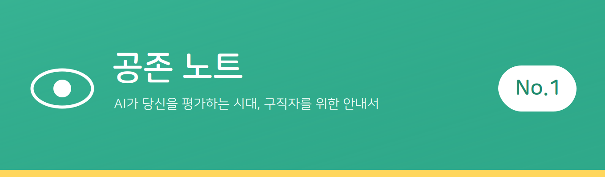
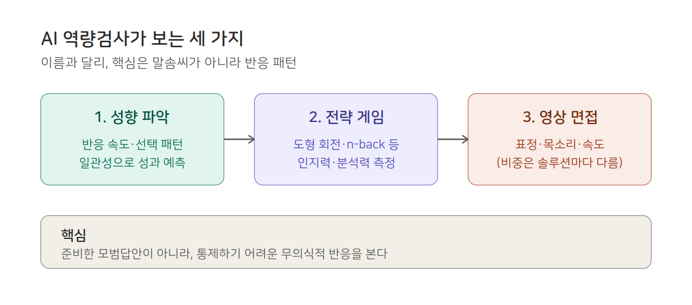

카메라를 켜고, 아무도 없는 방에서 혼자 질문에 답해본 적 있나요. 그 어색한 순간, 화면 너머에서 나를 보고 있는 게 누구인지 — 혹은 무엇인지 — 우리는 모릅니다.
AI 면접, AI 역량검사. 이름은 익숙합니다. 그런데 막상 무엇으로 평가받는지 물으면, 우리는 답하지 못합니다. 내가 지원한 그 회사가 AI를 쓰는지, 그 AI가 내 표정을 보는지 말투를 보는지, 그 판단이 공정한지 — 아무도 알려주지 않으니까요.
더 답답한 건 이겁니다. 상대가 누군지도 모르는데, 어떻게 대응 방법을 세우겠어요. 사람인지 알고리즘인지도 모르는 채로, 우리는 매번 면접장에 들어갑니다.
저는 그게 부당하다고 느꼈습니다.
정보가 없는 게 아닙니다. 흩어져 있을 뿐입니다. 뉴스 기사에, 커뮤니티 후기에, 기업 채용 페이지 구석에 — 조각조각 존재하지만, 누구도 한곳에 모아 정리해주지 않았습니다.
그래서 시작합니다. 흩어진 걸 모으고, 모호한 걸 정리해서, 당신이 최소한 무엇을 상대하는지는 알 수 있도록.
《공존 노트》는 그 기록입니다.
[AI 역량검사는 당신의 '무엇을' 보는가]
"AI 역량검사 봤어요?" — 취업 준비를 해봤다면 한 번쯤 들어본 말입니다. 그런데 막상 그게 뭘 보는 검사인지 물으면, 대부분 정확히 답하지 못합니다. 이름은 익숙한데 정체는 모호한, 딱 그런 전형입니다. 오늘은 그걸 정리해봅니다.
먼저, 가장 큰 오해부터.
많은 사람이 'AI 역량검사 = AI 면접'이라고 생각합니다. 그런데 이 둘은 다릅니다. 국내에서 가장 널리 쓰이는 마이다스인의 AI 역량검사는, 사실 대화형 면접보다 적성검사에 가깝습니다. IT 전문매체 THE AI의 한 기자가 직접 응시해보니, 자기소개나 질문에 쓰는 시간은 적었고, 게임과 성향 파악에 들어가는 시간이 훨씬 많았다고 합니다.
더 흥미로운 사실. 마이다스인의 백서에 따르면, 이 검사는 이력서·자기소개서 분석이나 영상면접 답변 분석은 하지 않습니다. 핵심인 성과역량 검사는 뇌신경과학에 기반한 통계적 방법이며, 여기엔 오히려 'AI 기술을 적용하지 않는다'고 명시돼 있습니다. 즉 'AI 역량검사'라는 이름과 달리, 그 핵심은 당신의 말솜씨가 아니라 반응 패턴을 봅니다.
그럼 실제로 무엇을 측정하나. 이 검사는 보통 세 단계입니다.
(아래 '무엇을 측정하나'는 마이다스인의 공식 발표가 아니라, 응시 경험과 언론 보도에 근거한 정리입니다. 검사 구성은 기업·시기에 따라 다를 수 있습니다.)

· 성향 파악: 객관식 문항에 답하면, 답 내용뿐 아니라 반응 속도·선택 패턴·일관성까지 분석합니다. MBTI 같은 성격 검사처럼 보이지만, 목적은 성격이 아니라 성과 예측입니다. 같은 질문을 여러 번 다르게 물어, 꾸며낸 답을 걸러냅니다.
· 전략 게임: '도형 회전하기', '도형 순서 기억하기(n-back)', '길 만들기' 같은 게임을 풉니다. 게임으로 뇌를 자극한 뒤, 의식적으로 통제하기 어려운 즉각적 반응을 측정합니다. 인지력·분석력을 봅니다.
· 영상 면접: 주관식 답변을 녹화해 표정·목소리·답변 속도를 분석합니다. (단, 이 영상 분석의 비중과 방식은 솔루션마다 다릅니다.)
여기서 우리가 알아야 할 것.
핵심은 이겁니다. 이 검사가 보는 건 당신이 준비한 모범답안이 아니라, 통제하기 어려운 무의식적 반응입니다. 그래서 'AI 면접 꿀팁'으로 외워서 대비하는 데는 한계가 있습니다. 동시에 — 바로 그렇기 때문에 무엇을 측정당하는지조차 모르고 응시하면, 자신이 어떻게 평가됐는지 영영 알 수 없습니다.
그게 우리가 이걸 정리하는 이유입니다. 잘 보기 위해서가 아니라, 무엇을 상대하는지 알기 위해서.
[내가 지원한 회사가 AI를 쓰는지 확인하는 3가지 방법]
앞에서 AI 역량검사가 뭘 보는지 정리했습니다. 그런데 더 근본적인 질문이 남습니다 — 내가 지원한 그 회사는, 애초에 AI를 쓰긴 할까? 지금 당장 써먹을 수 있는 확인법 세 가지를 정리합니다.
1. 채용 공고를 다시 읽으세요. 'AI 역량검사', 'AI 면접', '온라인 인적성' 같은 단어가 전형 안내에 있는지 봅니다. 의외로 많은 회사가 작게 적어둡니다. '온라인 평가'처럼 모호하게 쓰인 경우, 그게 AI일 가능성이 높습니다.
2. 채용 솔루션 이름을 검색하세요. 전형 안내나 응시 링크에 '잡다(JOBDA)', '뷰인터HR', '마이다스인' 같은 이름이 보이면, 그게 AI 채용 솔루션입니다. 이름을 검색하면 그 솔루션이 무엇을 측정하는지까지 알 수 있습니다.
3. 먼저 본 사람들의 후기를 찾으세요. '회사명 + AI 면접', '회사명 + 역량검사'로 검색하면, 커뮤니티에 먼저 응시한 사람들의 기록이 남아 있는 경우가 많습니다. 다만 후기는 개인 경험이라 회사마다·시기마다 다를 수 있으니, 참고만 하세요.
이 세 가지가 번거롭게 느껴지신다면 — 맞습니다. 흩어져 있어서 번거롭습니다. 그걸 한곳에 모으는 게 저희가 준비하는 일입니다.
[맺음말]
첫 호는 여기까지입니다.
《공존 노트》는 AI가 사람을 평가하는 시대에, 구직자가 최소한 무엇을 상대하는지는 알 수 있도록 흩어진 정보를 모으고 정리하는 기록입니다. 다음 호에서는 'AI 면접, 거부할 권리가 있을까?'를 다룹니다.
공존 노트는, 합격의 요령보다 당신이 무엇으로 평가받는지 아는 것이 먼저라고 봅니다.
이 글이 도움이 됐다면, 지금 취업을 준비하는 친구에게 공유해주세요. 한 사람이라도 덜 깜깜한 채로 면접장에 들어갈 수 있도록.